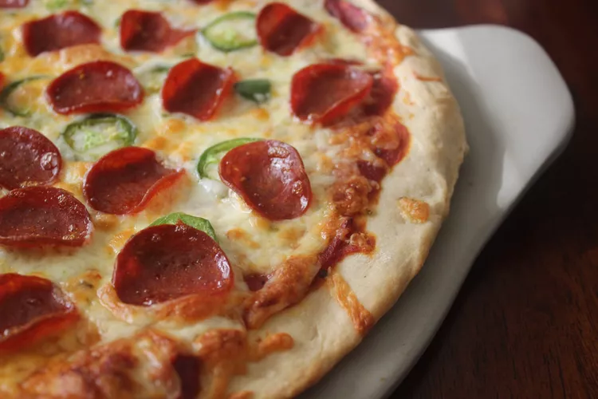
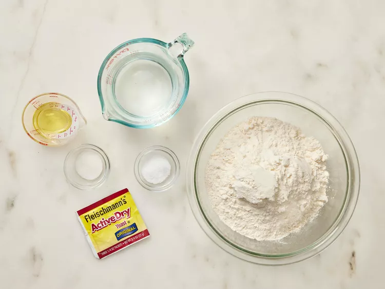
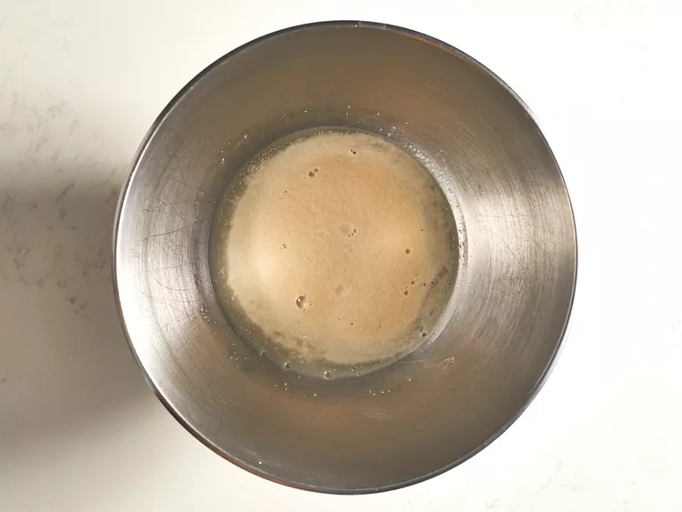
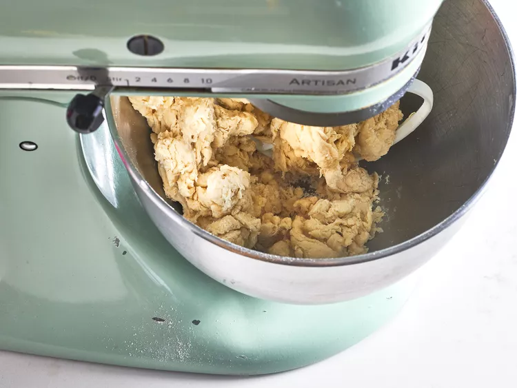
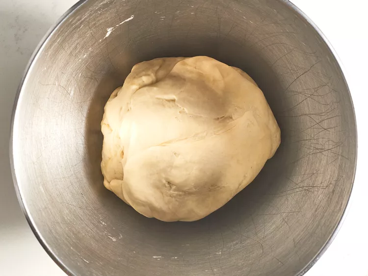
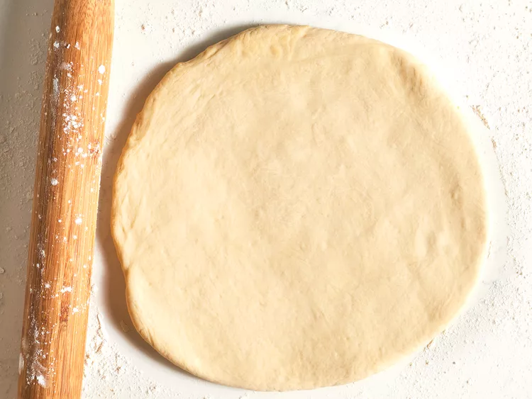
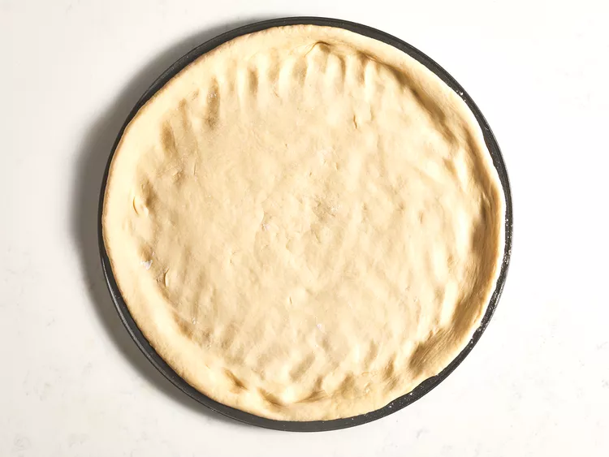
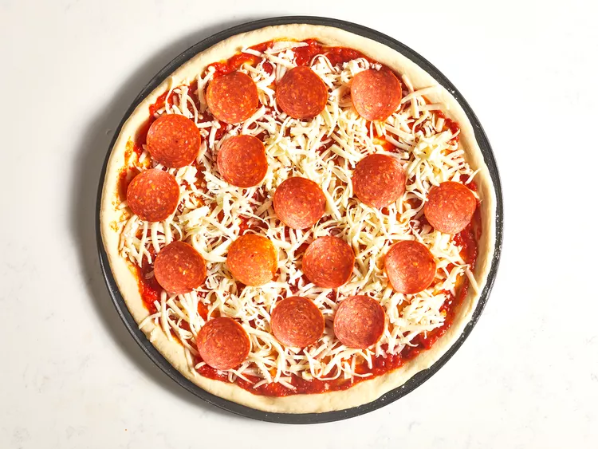
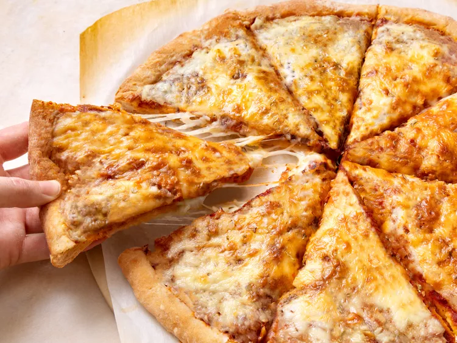

This is a great recipe when you don't want to wait for the dough to rise. You just mix it and allow it to rest for 5 minutes and then it's ready to go! It yields a soft, chewy crust.
Gather all ingredients. Preheat oven to 450 degrees F (230 degrees C), and lightly grease a pizza pan.
Place warm water in a bowl; add yeast and sugar. Mix and let stand until creamy, about 10 minutes.
Add flour, oil, and salt to the yeast mixture; beat until smooth. You can do this by hand or use a stand mixer fitted with a dough hook to make it easier.
Let rest for 5 minutes.
Turn dough out onto a lightly floured surface and pat or roll into a 12-inch circle.
Transfer to the prepared pizza pan.
Transfer to the prepared pizza pan.
the oven and let cool for 5 minutes before serving.
